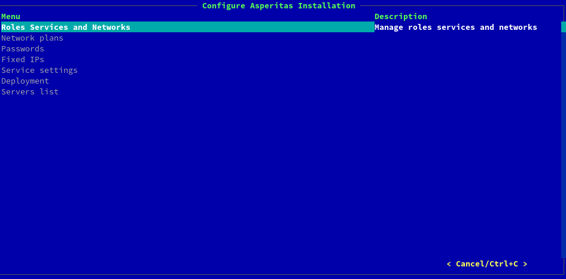

Полное развёртывание с нуля¶
При первоначальном развёртывании строго советуется пройти каждый пункт! Asperitas Console не предполагает быстрого старта или прототипного развёртывания!

Физические узлы¶
Перейдите во вкладку Baremetal nodes. Нажмите кнопку Add, чтобы добавить новый узел.

Красным цветом выделены поля обязательные для заполнения.
Name - имя физического узла. Используется лишь для удобства, не влияет на hostname узла;
BMC type - тип BMC, поддерживаемые значения: IPMI, iDRAC;
BMC address -
BMC login
BMC password
Profile
UEFI boot mode
PXE port mac_address
Disk capacity
Cpu number
Architecture
Memory capacity
При добавлении узла
Интроспекция¶
Порядок физических интерфейсов¶
Диск операционной системы¶
Физические порты¶
Сети¶
Шаблоны развёртывания¶
Развёрнутые сервера¶
Развёртывания¶
